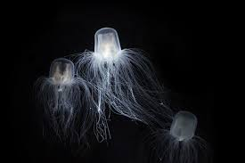

ANIMALES MARINOS PELIGROSOS
Avispa marina o medusa de caja

Es una medusa y aunque mucha gente crea que sencillamente producen urticarias y quemaduras que pueden ser más o menos dolorosas, lo cierto es que esta especie en concreto es venenosa. Es uno de los animales más venenosos del mundo, pues su veneno es letal con poca cantidad, y más concretamente, es el animal más venenoso del mundo.
Habita en aguas australianas y muchas personas han muerto a lo largo del tiempo por su picadura, pues con inyectar algo menos de 1 miligramo y medio de su veneno, esta medusa es capaz de acabar con un humano adulto en poco rato, sin que siquiera le dé tiempo de nadar de vuelta a la orilla.
Tiburón blanco

El Carcharodon carcharias o tiburón blanco vive en aguas oceánicas templadas y en algunos mares también templados y es el pez depredador más grande del mundo, pues puede pesar 2 toneladas (2.000 kg) y en su etapa adulta mide entre 4 y 6 metros de longitud. Tienen 3.000 dientes con los que desgarran a las presas para comérselas, pero también los usan para atrapar presas y engullirlas de una vez.
Se alimentan tanto de peces como de mamíferos marinos pero, aunque nos den tanto respeto y miedo y sean animales realmente impresionantes, normalmente no se acercan a los humanos, no suelen atacarnos ni somos su alimento habitual ni preferido. Nos atacan por sentirse amenazados por nuestra presencia o por pura curiosidad, para saber qué somos, muchos de sus ataques no son mortales aunque sí pueden llegar a serlo.
Pez león

El pez león o Pterois volitans, es un claro ejemplo de por qué los animales venenosos tienen colores brillantes y vistosos, pues son de color blanco con rayas marrones o rojizas que resaltan mucho, sobre todo cuando les da algo de luz cuando nadan más cerca de la superficie.
Tienen largas espinas desde la cabeza hasta la cola, a lo largo de todo el lomo, y en todas sus aletas y cola. En la base de estas púas tiene unas glándulas venenosas que producen y expulsan el veneno a través de estas espinas cuando lo necesitan, básicamente cuando las presionan al ser pisado, cogidos, mordidos... Este veneno produce un gran dolor y puede llegar a producir la muerte por parálisis y asfixia.
Pez globo

Aunque tenga un aspecto divertido, sobre todo cuando se hincha, el Tetraodontidae o pez globo es un animal realmente peligroso si nos lo comemos. La persona o animal que ose comérselo se envenenará y morirá en poco tiempo, aunque en japón es conocido como Fugu y es considerado una delicia para el paladar, algo irónico.
Tiene glándulas venenosas repartidas por casi todo el cuerpo, como en el hígado, en los genitales, la piel y distintos órganos o vísceras. Concretamente, su toxina puede matar hasta 30 personas. Por ello, solo lo pueden preparar y cocinar los chefs con licencia.
Para terminar, dejamos aquí abajo un vídeo sobre los 10 animales más peligrosos del mundo y así puedes conocer el ránking teniendo en cuenta también a los que habitan fuera de los océanos.
Pez piedra

Es uno de los más venenosos y tiene neurotoxinas y citotoxinas, lo que lo convierte en un un ser muy peligroso para otros de su entorno y para nosotros si lo pisamos al confundirlo con un piedra o roca, pues su aspecto es similar y se camufla. Su veneno se encuentra en sus puntas o espinas que recubren toda su piel, pero las más venenosas están en las zonas pélvica, anal y de las aletas dorsales.
Viven en el océano Pacífico y el océano Índico y su alimento principal son los crustáceos y peces pequeños y medianos.